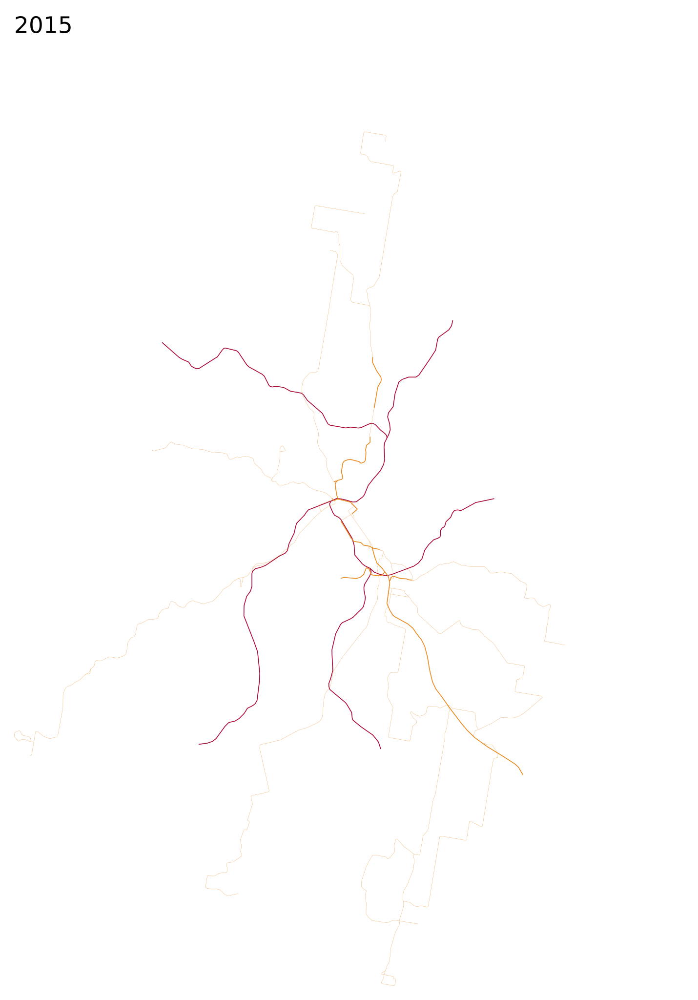

Melbourne
 Sydney
Sydney
 Adelaide
Adelaide
 Perth
Perth
 Brisbane
Brisbane

Auckland

five years earlier (or press a) --- five years later (or press s)
Based on frequent midday service at the end of the year in question (notes). Scale 10 CSS pixels per km.
Please send any corrections or questions to threestationsquare at gmail dot com.
 by OpenStreetMap contributors.
by OpenStreetMap contributors.